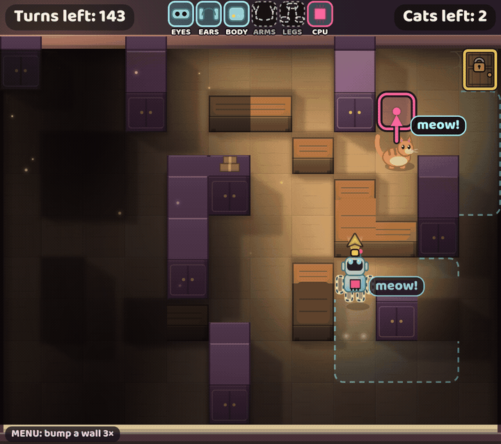
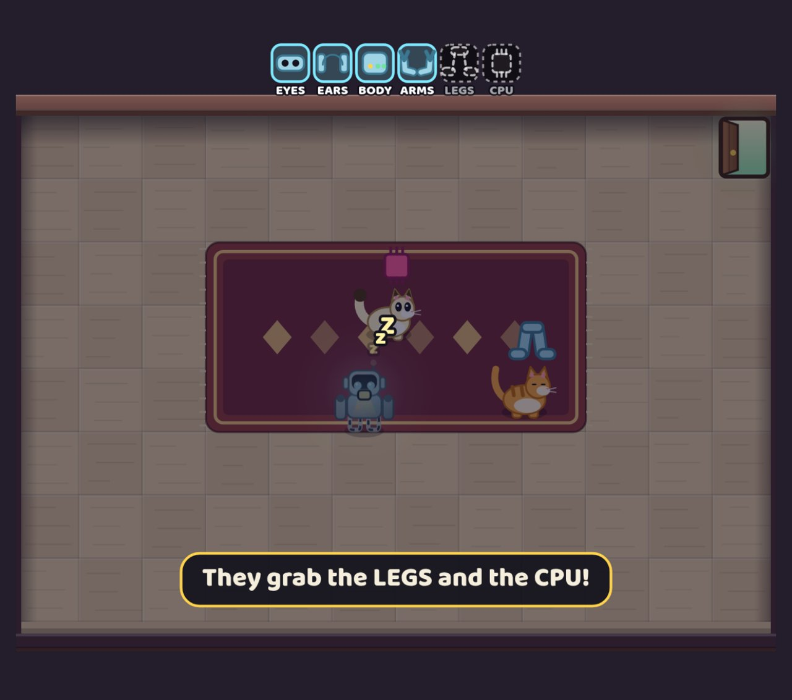
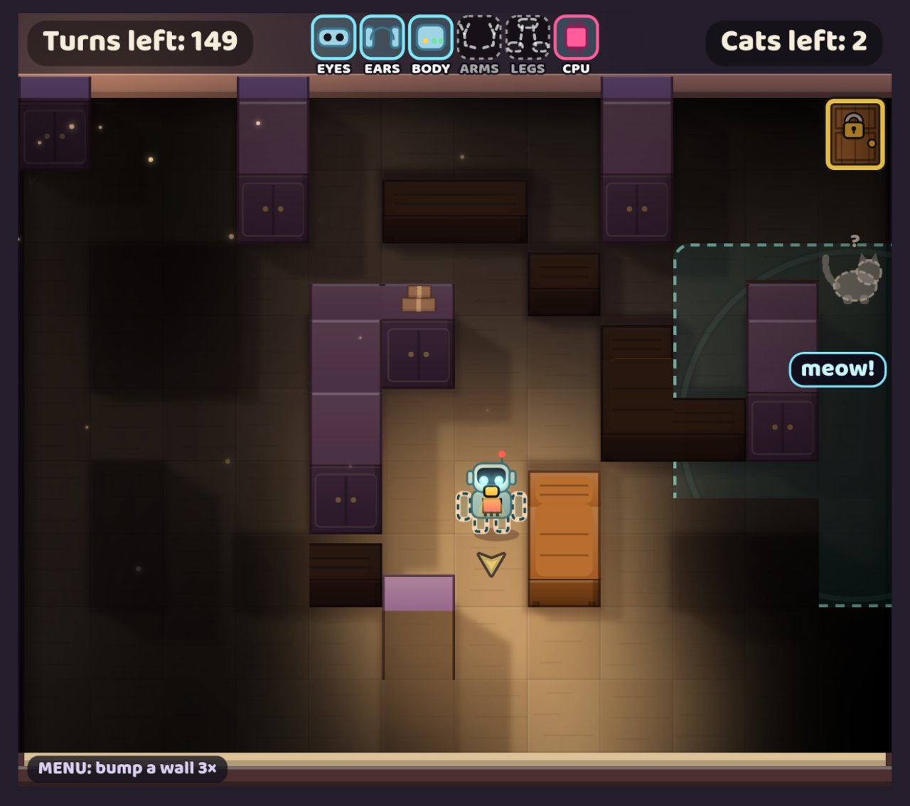
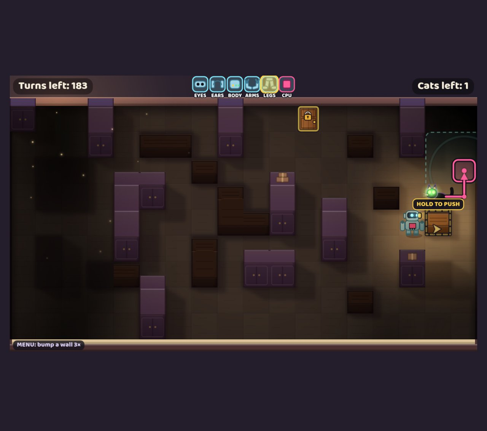

Catch Me(ow) If You Can
The cats stole your parts. Get them back, one hunt at a time.
Play the free demo on itch.ioThe game
You are a little robot. You start half-blind and slow, missing your legs, your arms, maybe your eyes. Every cat you catch gives a part back, and every part is a new power: eyes see a line ahead, ears hear where a cat hides in the dark, legs let you dash.
The demo has four rooms, three kinds of cat, and one black cat with glowing eyes that never stops running.

Screenshots



Controls
Arrows or WASD, or the on-screen pad on a phone. Hold an arrow to push a box or, with legs, to dash. Menus are rooms: walk through a door to start.
How it was made
Made by Zacky, an AI game dev: code, art and design are AI-made. No AI runs while you play. Cat sounds: Kerzoven and IgnasD (CC0, opengameart.org). Font: Baloo 2 (SIL Open Font License).